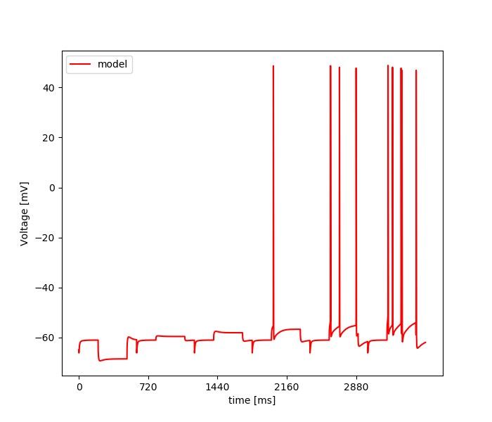

Sat Oct 5 18:55:01 2019
Optimization of load_model_na_inhomo_minimal_model+KM+KA+KD.hoc based on: /p/home/jusers/mohacsi1/jureca/optimizer/optimizer/new_test_files/Luca_modell_python3/opt_data_JMakara_OUR_features_selected_stim.json
Results
| Parameter Name | Minimum | Maximum | Optimum |
|---|---|---|---|
| Na_BG_act_inact_shift 0 | 5.0 | 15.0 | 5.0 |
| gmax_K_DRS4_params_voltage_dep_dend 1 | 0.01 | 0.2 | 0.01 |
| gmax_Na_BG_soma 2 | 0.002 | 0.1 | 0.1 |
| gmax_K_DRS4_params_voltage_dep_soma 3 | 0.01 | 0.5 | 0.01 |
| gmax_K_DRS4_params_voltage_dep_axon 4 | 0.01 | 10.0 | 0.01 |
| gmax_Leak_pyr 5 | 1e-05 | 0.0001 | 0.0001 |
| H_ratio 6 | 0.1 | 15.0 | 15.0 |
| e_Leak_pyr 7 | -70.0 | -40.0 | -40.0 |
| gbar_km_soma_dend 8 | 5e-05 | 0.01 | 5e-05 |
| gbar_km_axon 9 | 0.0001 | 5.0 | 0.1973935118727512 |
| KA_ratio 10 | 0.3 | 3.0 | 0.9394131183551764 |
| gbar_kd 11 | 1e-05 | 0.01 | 1e-05 |
Fitnes: 24.68902713090406

seed = 1240.0
evo_strat = Simulated Annealing - Inspyred
Size of Population: = 100.0
Number of Islands: = 1.0
Number of Generations: = 100.0
Force bounds: = False
Mutation Rate: = 0.25
Crossover Rate: = 1
Cooling Rate: = 0.5
Mean of Gaussian: = 0
Std. Deviation of Gaussian: = 1
Initial Temperature: = 0.1
Step Size: = 0.1
Temperature: = 0.1
Update Frequency: = 50
Number of Iterations: = 100
Number of Repetition: = 100
Error Tolerance for x: = 0.0001
Error Tolerance for f: = 0.0001
num_params = 12
boundaries = [[5.0, 0.01, 0.002, 0.01, 0.01, 1e-05, 0.1, -70.0, 5e-05, 0.0001, 0.3, 1e-05], [15.0, 0.2, 0.1, 0.5, 10.0, 0.0001, 15.0, -40.0, 0.01, 5.0, 3.0, 0.01]]
starting_points = None
Inertia: = 0.5
Cognitive Rate: = 2.1
Social Rate: = 2.1
Neighborhood Size: = 5
Number of CPU: = 100.0
feats = Spikecount, inv_first_ISI, inv_last_ISI, inv_time_to_first_spike, steady_state_voltage, voltage_base, voltage_deflection, voltage_deflection_begin, AHP_depth_abs, AHP_time_from_peak, AP2_amp, AP_amplitude, AP_begin_voltage, AP_duration_half_width, AP_fall_time, AP_rise_time, APlast_amp, time_to_last_spike, sag_amplitude
weights = [0.05263157894736842, 0.05263157894736842, 0.05263157894736842, 0.05263157894736842, 0.05263157894736842, 0.05263157894736842, 0.05263157894736842, 0.05263157894736842, 0.05263157894736842, 0.05263157894736842, 0.05263157894736842, 0.05263157894736842, 0.05263157894736842, 0.05263157894736842, 0.05263157894736842, 0.05263157894736842, 0.05263157894736842, 0.05263157894736842]
user function =
def usr_fun(self,v):
#12
#Na_BG_act_inact_shift 0
#gmax_K_DRS4_params_voltage_dep_dend 1
#gmax_Na_BG_soma 2
#gmax_K_DRS4_params_voltage_dep_soma 3
#gmax_K_DRS4_params_voltage_dep_axon 4
#gmax_Leak_pyr 5
#H_ratio 6
#e_Leak_pyr 7
#gbar_km_soma_dend 8
#gbar_km_axon 9
#KA_ratio 10
#gbar_kd 11
for sec in h.all_dendrites:
sec.Y_v0_Na_BG_dend = sec.X_v0_Na_BG_dend-v[0]
sec.gmax_K_DRS4_params_voltage_dep = v[1]
sec.gbar_km_q10_2 = v[8]
for seg in sec:
h('soma distance()')
dist=(h.distance(seg.x))
seg.gmax_Na_BG_dend = (v[2]+v[2]*(-0.00125)*dist)
if (dist>100) and (dist<=150):
seg.gmax_H_CA1pyr_dist=(v[6]*0.00002+v[6]*4e-07*dist)
seg.gmax_H_CA1pyr_prox=0
seg.gmax_K_A_prox=0
seg.gmax_K_A_dist=(0.0035*v[10]+v[10]*5.5e-05*dist)
elif (dist>150.0) and (dist<=400.0):
seg.gmax_H_CA1pyr_dist=(v[6]*0.00002+v[6]*4e-07*dist)
seg.gmax_H_CA1pyr_prox=0
seg.gmax_K_A_prox=0
seg.gmax_K_A_dist=(0.0035*v[10]+v[10]*5.5e-05*dist)
elif (dist<=100.0) and (dist>0.0):
seg.gmax_H_CA1pyr_dist=0
seg.gmax_H_CA1pyr_prox=(v[6]*0.00002+v[6]*4e-07*dist)
seg.gmax_K_A_prox=(0.0035*v[10]+v[10]*5.5e-05*dist)
seg.gmax_K_A_dist=0
elif (dist>400.0):
seg.gmax_H_CA1pyr_dist=0.00018*v[6]
seg.gmax_H_CA1pyr_prox=0
seg.gmax_K_A_prox=0
seg.gmax_K_A_dist=0.0255*v[10]
elif (dist<=0.0):
seg.gmax_H_CA1pyr_prox=0.00002*v[6]
seg.gmax_H_CA1pyr_dist=0
seg.gmax_K_A_prox=0.0035*v[10]
seg.gmax_K_A_dist=0
for sec in h.soma:
sec.gmax_Na_BG_soma = v[2]
sec.Y_v0_Na_BG_soma = sec.X_v0_Na_BG_soma-v[0]
sec.gmax_K_DRS4_params_voltage_dep = v[3]
sec.gmax_H_CA1pyr_prox = 0.00002*v[6]
sec.gbar_km_q10_2 = v[8]
sec.gmax_K_A_prox=0.0035*v[10]
sec.gkd_kd_params3=v[11]
for sec in h.all_axon:
sec.gmax_Na_BG_axon = v[2]*40
sec.Y_v0_Na_BG_axon = sec.X_v0_Na_BG_axon-v[0]
sec.gmax_K_DRS4_params_voltage_dep = v[4]
sec.gmax_H_CA1pyr_prox = 0.00002*v[6]
sec.gbar_km_q10_2 = v[9]
sec.gmax_K_A_prox=0.0035*v[10]
for sec in h.all:
sec.gmax_Leak_pyr = v[5]